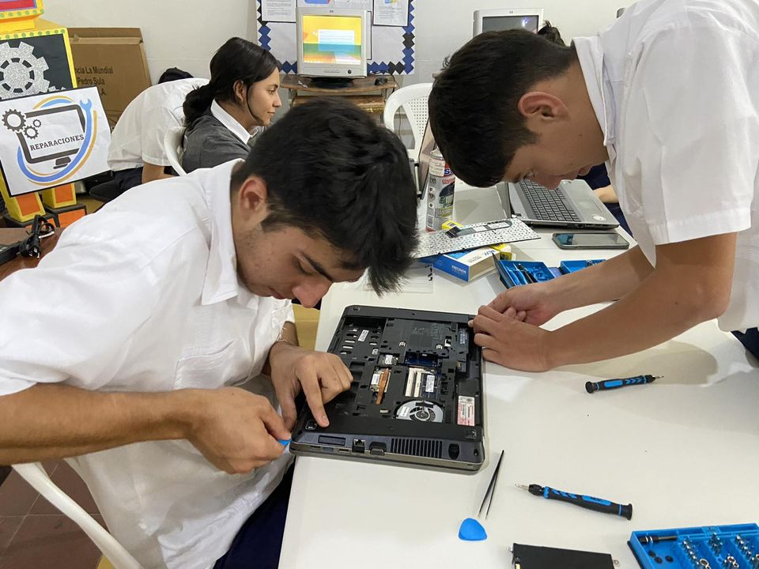
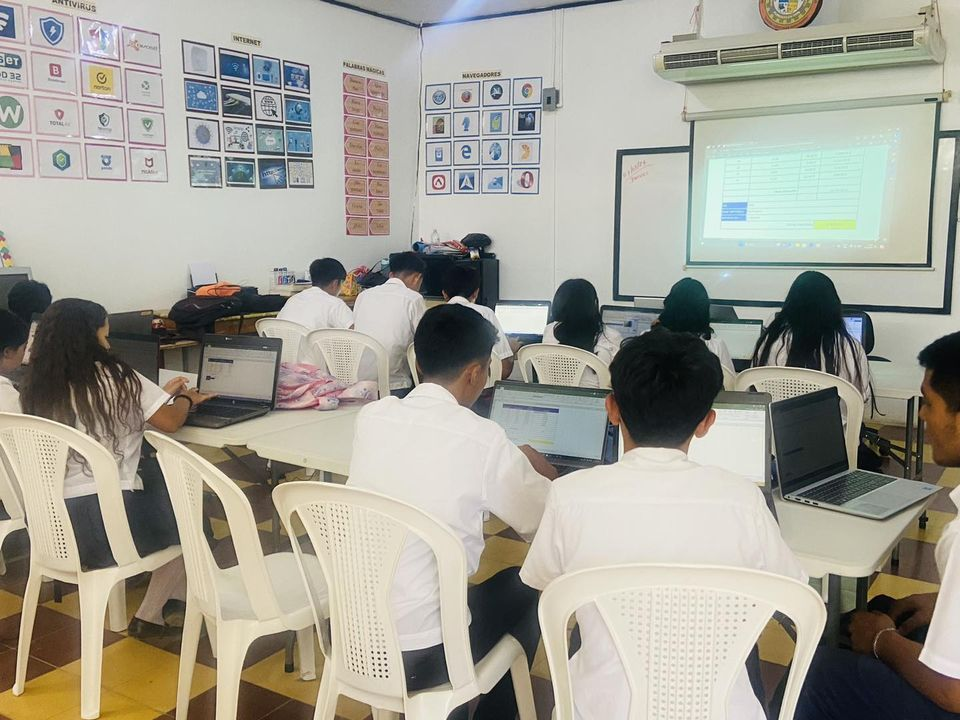
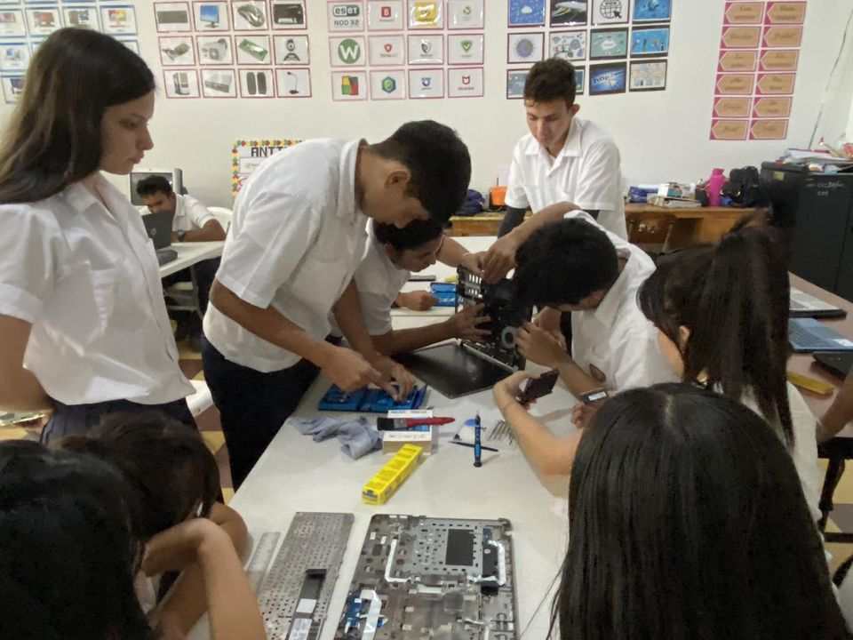

Un egresado del IGTC David Hercules Navarro en Bachiller Tecnico Profecional en Informatica contiene el conjunto de Conocimientos, habilidades, destrezas, actitudes y comportamientos integrados que caracterizan las competencias técnicas específicas
Campo De Aplicación
El Bachiller Técnico en Informática se podrá desempeñar en: Centros o departamentos de informática de cualquier institución o empresa, asistiendo al personal en el uso de herramientas de ofimática, en el correcto funcionamiento del equipo así como en la creación de programas que sean necesarios para el manejo de la información de las instituciones o empresas.
La creación de medianas empresas dedicadas a asesorías en sistemas de información, mantenimiento correctivo y preventivo de equipo tecnológico, instalación de redes locales y capacitación sobre tecnología.
Talleres o empresas de servicios técnicos en computación. Centros de capacitación en computación.
El egresado de este bachillerato podrá demostrar en el campo de trabajo profesionalismo, con una cultura y práctica de capacitación constante según los últimos avances tecnológicos.
Definición Profesional
-Realiza mantenimiento preventivo y correctivo de equipo de computación. – Instala, repara y actualiza redes de computadoras.
– Crea documentos e informes utilizando las herramientas informáticas vigentes. – Crea, mantiene y actualiza sistemas de información.
– Desarrolla, mantiene y actualiza sitios Web personales, institucionales o corporativos.
– Traza y Confecciona ropa aplicando diferentes métodos. – Organiza los procesos de producción industrial de ropa.
– Capacita en temas de informática.
Conocimiento
– Herramientas de Ofimática: Procesadores de texto, hojas de cálculo, diseñador de presentaciones, bases de datos, diseño de publicaciones, navegadores de Internet, servicios de mensajería electrónica, tráfico, respaldo y manejo de archivos de forma local y en red.
– Soporte Técnico: Instalación, mantenimiento y reparación de computadoras. – Instalación de Redes: Instalación, mantenimiento y reparación de redes de computadoras.
– Diseño Web: Creación, Mantenimiento y actualización de sitios Web.
Habilidades
– Interpreta manuales y documentación relacionada con la infraestructura tecnológica.
– Diseña planes de mantenimiento de la infraestructura tecnológica.
– Elabora y ejecuta planes de mantenimiento.
– Potencia la institución a través del manejo de presencia en Internet.
– Conoce y utiliza sistemas operativos y herramientas ofimáticas y tecnológicas de punta.
– Propone cambios en la infraestructura tecnológica institucional. – Comunica cordial y eficientemente los planes y actividades del departamento o unidad de informática.
– Diseña Sitios Web.
– Repara y actualiza equipo tecnológico.
– Instala, utilizada y repara infraestructura de redes.
– Capacita en temas tecnológicos y de interés personal e institucional.
Actitudes y Comportamientos
– Responsabilidad en el manejo del equipo.
– Participación y liderazgo activa en la elaboración y ejecución de programas de mantenimiento.
– Practica medidas de higiene y seguridad.
– Trabaja en equipo.
– Aplica el análisis de problemas para la toma de decisiones.
– Respeto y crítica constructiva hacia el trabajo de y con los demás.
– Proactividad en la gestión de recursos.